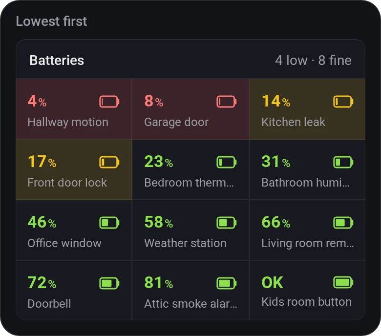
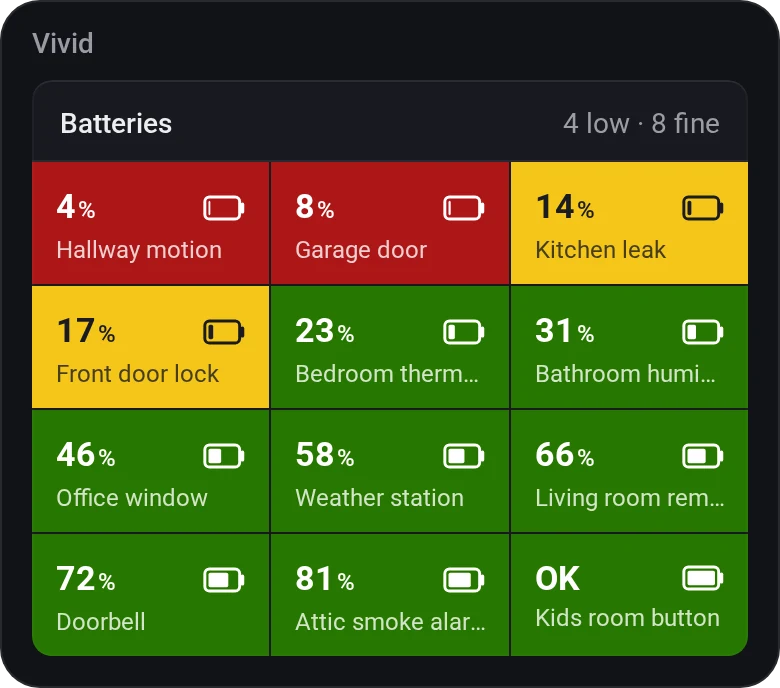
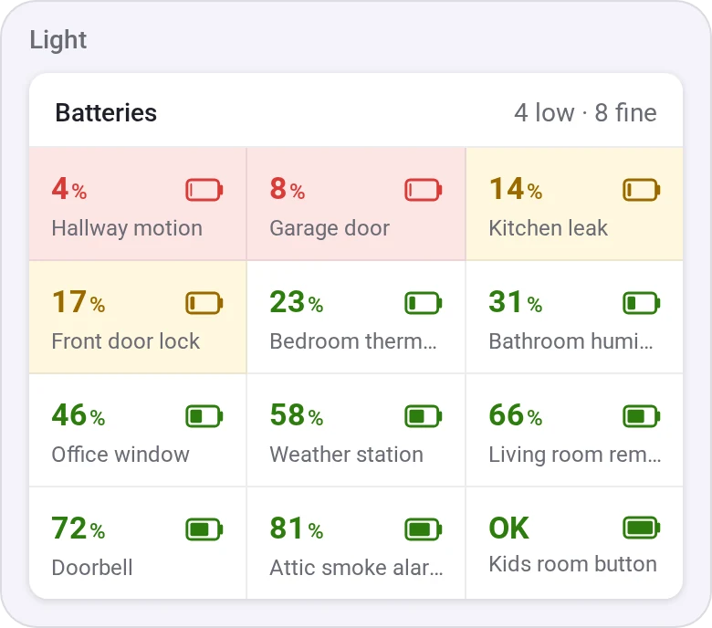
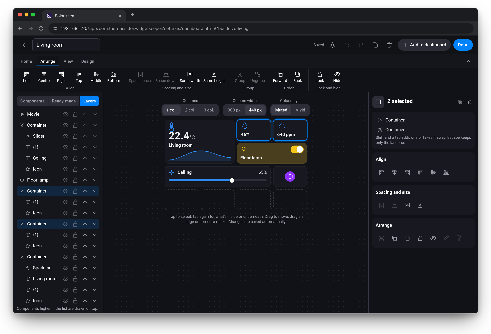

Every battery in one tile, and the editing tools you know from design apps in the Widget Builder.
The battery of every device you pick, in one tile. The ones that need a new battery come first.



A ribbon of tools above the canvas, as in Figma or Photoshop. The same tools are on a right click, with a list of shortcuts under ?.
